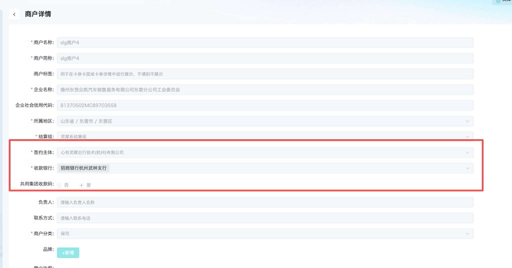

一级、二级共用同一个收款账号，给商户看的账号整串不变。入账按记账子单元名称区分。名称由我们定义。大昌行原有的两个二级收款账号要注销，已入账数据保留。
商户在灵犀开通账号时，收款银行选招商银行，平台调用招行接口，给这个商户开一个记账子单元。商户充值时往这个收款账号打款。商户只有一级、二级。两边都走招商时，可以共用同一个收款账号，用记账子单元名称区分是哪家的钱，名称取营业执照。

这次需求来自大昌行，它是一级商户。它现在的收款账号还没有共用：
要改成：这两个原二级收款账号都注销。再在一级那个招商银行收款账号下，新建两个二级子单元，名称用该二级商户的营业执照加业务类型。给商户看的收款账号整串与一级一致。
部分商户要在一级或二级下面，再把事故车和续保的充值分开。给商户看的收款账号整串仍然是同一个，不拼子单元编号。招行按记账子单元名称把来款记入对应子单元。哪个子单元收哪个业务，开户时由我们指定。
| 子单元 | 记账子单元名称 | 谁来定 |
|---|---|---|
| 只区分到商户 | 营业执照 | 我们开户时写入 |
| 还要区分业务 | 营业执照+事故车、营业执照+续保 | 我们开户时写入。一个业务一个子单元 |
名称写在新增记账子单元的「记账子单元名称」dmanam。入账按这个名称归到对应子单元。
入账后按子单元查询交易明细。指定某个子单元收哪一类业务，查这个子单元，里面就是这一类业务的钱。
一级的事故车、一级的续保、二级的事故车、二级的续保，各进各的子单元。没做业务区分的，整笔记进该商户原来的子单元。
对不上子单元名称的来款挂起，不记入任何一个商户账户。落进招行默认子单元的，也算对不上。
| 子单元 | 新的打款 | 记到哪 | |
|---|---|---|---|
| 没做业务区分 | 不新增 沿用原来的子单元，名称仍是营业执照 | 打到同一个收款账号 | 原来的账户 |
| 做了事故车、续保区分 | 新增 事故车、续保各一个子单元。大昌行原有的两个二级账号注销，见第 6 节 | 仍打到同一个收款账号 | 按记账子单元名称进入对应业务账户 |
| 名称对不上 | 挂起 | 打到同一个收款账号，但对不上已有名称 | 不记入任何一个商户账户 |
大昌行二级现在的两个收款账号全部注销，注销后再按上面的名称新建。一级那个招商银行收款账号留着，作为之后共用的收款账号。
| 原账号 | 怎么处理 |
|---|---|
| 二级 · 招商银行这条 | 调用交易管家（新）的关闭记账子单元 NTDMADLT 注销。注销后不再收款。 |
| 二级 · 交通银行这条 | 同样注销，注销后不再收款。它不是招行子单元，不走 NTDMADLT。具体注销方式待确认。 |
没做这次调整的其他商户，原有子单元不注销。
文档是交易管家（新）：云直联文档。左边菜单：现金管理 → 交易管家（新）。
| 接口 | 这次 |
|---|---|
1.1 新增记账子单元 NTDMAADD | 调用 要区分业务的商户，事故车、续保各开一个子单元。名称 dmanam 传营业执照加业务类型。编号用数字，可由系统生成。 |
1.2 关闭记账子单元 NTDMADLT | 调用 注销大昌行二级那条招商银行收款账号。不划转余额。 |
1.3 修改记账子单元 NTDMAMNT | 不调用 不用它改历史子单元。 |
3.1 交易查询 BHHDZCTZ | 调用 入账后按记账子单元名称 zDumNam、编号 zDumNbr 核对这笔钱属于哪个商户、哪个业务。 |
招行说明：哪个子单元收什么业务由我们指定。入账按记账子单元名称区分。查询该子单元的交易明细，就是这一业务的钱。